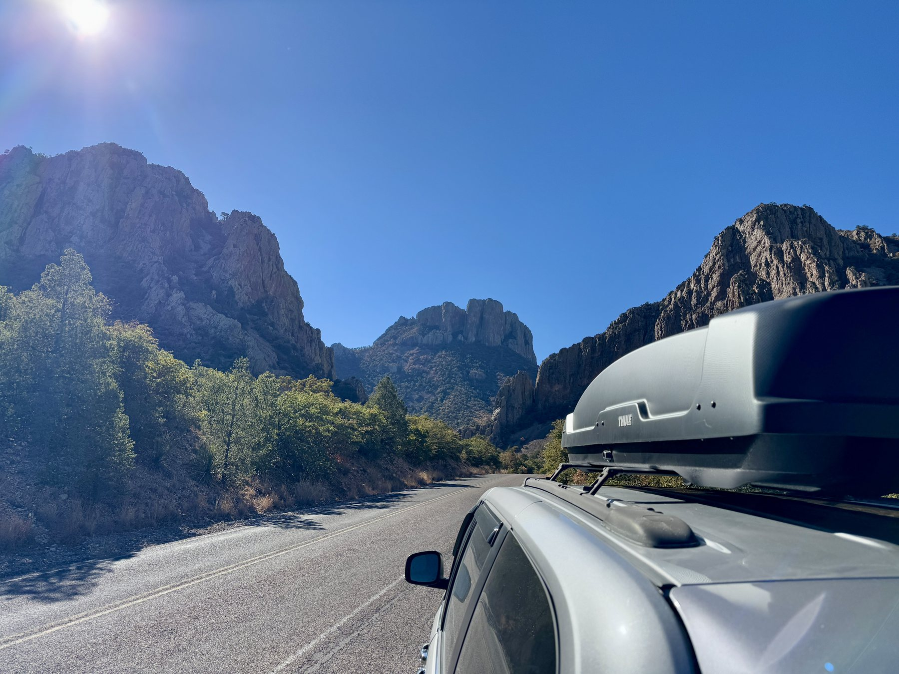

We returned to Coos Bay, completed the United States Pacific Coast to Los Angeles, then crossed the country to Miami.
1. Cincinnati to Fresno
We returned first to the Memphis KOA—the scene of Mosquitogeddon—and succeeded. The travel kit had improved: a Jackery 1000, rechargeable Ryobi work fan, new soft-sided cooler, mattress topper, and more storage after removing the rear seats. At a service-free I-40 rest stop, the Jackery produced a hot roadside lunch. The system was already proving itself.
We looped north on I-25 to add Colorado, stayed near Taos, saw wild bighorn sheep, passed through Cimarron Canyon, visited the Very Large Array, and explored the Gila wilderness and ancient cliff dwellings. In Saguaro National Park, a simple driving loop produced a tarantula walking along the road.
Death Valley felt massive and astonishingly empty. We camped at Furnace Creek, explored Ubehebe Crater and Twenty Mule Team Canyon, and used the Jackery to make “Ranger Coffee,” a practice learned on safari. We began using the stable minivan as a platform for 30-second phone exposures of the night sky.

We could not reach Racetrack Playa without a suitable 4x4. David began posing the minivan beside “4x4 only” signs. The joke became a list of capabilities for a future Alaska rig. North of the park, a route toward the Trail of 100 Giants sent us down a remote maintained two-track after locals warned of snow. The sequoias were magnificent; the cold and altitude were exhausting. Two nights indoors in Fresno—including our anniversary—ended the first leg. Fresno: famously romantic.
2. Fresno to Crescent City
Thanksgiving in Livermore with David’s cousin Melissa and her husband included a family meal, a glider flight, and a Cessna flight to lunch. Yosemite was cold and largely experienced from the minivan, with short walks and views of El Capitan, Half Dome, and waterfalls.
Snow made the high country uncertain. With coastal reservations as the next firm waypoint, we wandered through valley farmland and roadside Americana, spent time with friends in Windsor, and reached Manchester Beach for our first Pacific view.
At Crescent City, three nights gave us time for a day trip to Coos Bay—connecting PCH-Ex to the earlier Northwest Hotlap—and repeated drives through the redwood parks. Jedediah Smith remains a favorite. We later returned in PourHouse and expect to return again.
3. Crescent City to Palm Springs
At Leggett, we began California Highway 1. We traveled south until a slide closure forced us inland to Pinnacles National Park, where we saw condors and experimented with night-sky photography. We later approached the break from the south before continuing toward Los Angeles.

On December 14, storms were approaching Bolinas Lagoon. We rounded a bend and found Shoreline Highway under about four inches of water. Another minivan waited. Several 4x4s came through in the opposite direction, and the visible yellow centerline showed that the roadway did not suddenly plunge. We studied it, crossed roughly seventy-five feet at a rolling speed, and acquired a favorite line: “We drove through the ocean.”
Our first Golden Gate Bridge crossing was surreal—and painfully loud. In stormy weather, the bridge whistled all the way across. We stopped at overlooks, ate at the Taco Bell by the beach in Pacifica, placed Jeffrey’s ashes at Dean’s crash site, and photographed the minivan’s “sexiest car-top carrier” on Rodeo Drive. A visit with an old work friend in Palm Springs ended the third leg.
4. Palm Springs to Miami
The final leg moved through Joshua Tree, the Salton Sea, and Las Vegas, where Spencer joined us. Together we traveled through St. George, Page, Lake Powell, slot canyons, rappelling, Coral Pink Sand Dunes, and the Grand Canyon’s South Rim before he departed in Phoenix.
We continued through Hatch, White Sands, Carlsbad Caverns, Guadalupe Mountains, Marfa, the Border Patrol Tethered Aerostat Radar System, and Big Bend. The minivan posed in White Sands, joined an art installation in Marfa, passed the world’s largest pistachio, and carried David to the Rio Grande.

Texas to Florida went quickly. We camped at Dauphin Island, rode the ferry, watched the odometer cross 100,000 miles, and eventually parked at a Miami boat ramp. Pacific to Atlantic: complete.